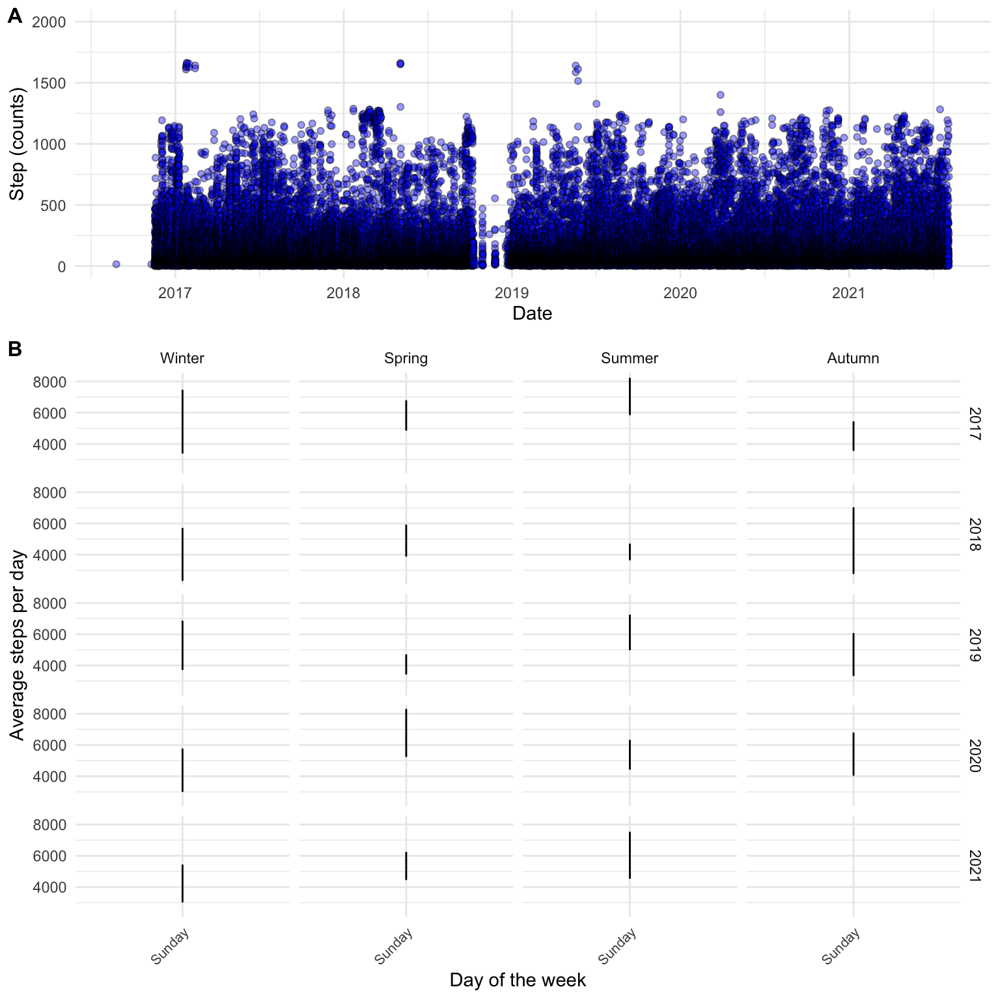

2 Introduction to data science
2.1 About data in the world of sport and exercise
Data are everywhere. Most of us always walk around with a data collection device in our pockets. This device (your mobile phone) records and store data about you throughout the day. Such data are the basis of the quantified self-movement1, which has grown in popularity as capabilities to record data from daily life have improved. People interested in quantifying their personal life does so for different reasons, but often with the intent to improve their health2.
Much of this kind of data is readily available to us because data privacy policies regard it as personal 3. With some effort, you can get your data out of your iPhone to explore, for example, your daily step count. I discovered that my phone(s) has been collecting data for me since 2016, and I tend to walk fewer steps on Sundays than Saturdays (see Figure Figure 2.1).
Data are also collected and stored in publicly available databases. Such databases are created for the purpose of storing specific types of data, such as soccer4 or biathlon results5, or biological information, such as gene sequences6. Even data from scientific studies are often publicly available7, meaning we can perform scientific studies on unique data sets without collecting the data ourselves.
The above examples show an abundance of available data. The problem is that to understand a phenomenon better, we need techniques and methods to make sense of the data, and this is where data science and data literacy comes in. In the world of sports and exercise, regardless if you are interested in doing scientific investigations, coaching a soccer team or individual athletes, or helping patients recover from surgery using exercise therapy, you are faced with the problem of handling and making sense of data. Essential skills and a deeper understanding of data science are transferable between such areas of practice. One broader aim of this course is for you to develop skills to better understand data.
Think about the literature! Spiegelhalter (The Art of Statistics, in the introduction chapter) talks about how statistics has evolved towards the broader field of data science. In data science, statistical theory and methods are just parts of the problem solving cycle. Try to think about how you would use the PPDAC cycle as a exercise coach and a scientist. What are the similarities and differences?
2.2 Replication and Reproducibility
In scientific research, replication is a way to confirm scientific claims. When an independent group of researchers can confirm a result, the claim is more likely to be true. However, many results will be impossible to replicate due to the size of trials, costs, and urgency of the research question. A recent example is the many vaccine trials performed to develop a vaccine against COVID-198. Other examples concern studies with unique study populations, such as large-scale epidemiological studies (Peng, Dominici, and Zeger 2006), but the same is true for unique investigations in sport and exercise science.
When studies are not likely to be replicated, reproducibility of the analyses and results has been suggested to be a minimum standard for scientific studies. Reproducibility means that independent researchers can draw similar results or conclusions from the same data (Peng, Dominici, and Zeger 2006).
Peng et al. (Peng, Dominici, and Zeger 2006) suggests that a fully reproducible study has
- Available data.
- Computer code (software) that produces the results of the study.
- Documentation that describes the software and data used in the study, and
- ways to share the data and code.
The above principally relates to the trust we can place in scientific results. However, the minimum reproducibility standard also has advantages for the individual researcher (or master’s student)! When working with reproducible methods, we will develop ways of documenting and automating our analyses. This way of working with analyses will make it easier to collaborate with others. And, as it turns out, your most frequent collaborator is you in the future!
Reproducible data analysis means that you will make it explicit and transparent. In traditional data analysis, most activities are in the “black box.” To avoid bias (Ioannidis 2005), the “black box” needs to be opened, and you need to actively make transparent decisions all along the analytic pipeline (Leek and Peng 2015). This pipeline preferably involves the whole problem-solving cycle described by Spiegelhalter (Spiegelhalter 2019). However, the tools we will learn in this course focus primarily on the steps from the experimental design to the presentation of statistical results (Leek and Peng 2015). These steps include data collection (and storage), data cleaning, exploratory data analysis, statistical modeling, and statistical inference (and communication) (Leek and Peng 2015).
2.3 Tools in data science
Ways to interpret and make sense of data involve different methods. These methods are often implemented in computer software, which means that when you want to understand data as a practitioner (scientist, coach, analyst), you must master some computer software. Microsoft’s Excel is one of the most common software used to understand data, even among professional data scientists9. You can do fantastic stuff with Excel! In the world of sport and exercise, Excel has been used in diverse activities such as scientific investigations, planning and recording training for world champions10, and scheduling appointments.
For scientific research, most people use additional software to do statistical analyses. If you have spent time in higher education, you have probably heard about SPSS, Stata, or Jamovi. These are all specialized software used for statistical analyses.
The tools mentioned above can all be used as part of a fully reproducible workflow. However, some software solutions suit this requirement better than others. Going back to the description of reproducible science as made by Peng et al. (Peng, Dominici, and Zeger 2006), we want software where analyses can be
- Human- and computer-readable, meaning that we want to be able to write scripts or computer programs that execute the analyses.
- Documented, meaning that along the code, we want to be able to describe what the code does.
- Available and able to share with others, meaning that our analyses can be run on open and free software to maximize the ability to share them.
This means that the software we would prefer should be run using scripts (as opposed to point and click) and be free of charge (and open source, as opposed to expensive and proprietary). These criteria can be fulfilled when we use software written around the R language (although alternatives exist 11).
R is a computer language especially well suited for reproducible data analysis. As users can contribute software extensions, also called packages, many specialized software implementations exist for tasks such as creating figures or analyzing specific data. Around R, people have been developing auxiliary software for reproducible data analysis. The negative part of all these opportunities is that using R requires effort. The learning curve is steep!
Even though you might not use R ever again after this course, trying to learn it will let you know something about programming, modern data science capabilities, statistical analysis, and software/computers in general. These areas are all aspects of our modern society and are transferable regardless of what computer language we are talking about.
A big challenge when working with complex analyses or other large projects over time is keeping track of changes. Another challenge might be effective collaboration with others and with yourself in the future. To overcome these challenges, we can use a version control system connected to a social platform for distributing computer code and data. Github is a web-based platform that provides this functionality. It is a potent combination if you want to collaborate and share what you are working on.
2.4 Installing and getting to know the required software
As noted above, there are multiple computer languages and software solutions that could satisfy our needs. However, in this course, we will focus on a combination of continuously improved tools to make it easy for the user to collaborate and communicate data analyses. Below is a checklist of what you must install on your system to take full advantage of the proposed tools.
2.4.1 R and RStudio
R is a free, open-source software designed for statistical computing. We will use R as a part of an environment (using R Studio, introduced below). To download and install R:
Go to https://cran.uib.no/,
Select your operating system (Download R for Windows, MacOS or Linux).
- If you have Windows, choose
base, click on “Download R (…) for windows”, save and run the file. The installation process should be self explanatory. - If you have MacOS, download and install the latest release.
- If you have Windows, choose
Run the installer to install R.
RStudio is a software designed to make it easier to use R. It is free to download and use. It is designed as an integrated development environment that lets you organize your work together with R and other tools. Install it by going to https://www.posit.co/.
- Select “Products” and RStudio IDE
- Scroll down and find the FREE open source edition
- Download the installer made for your operating system.
2.4.2 Git and Github
Git is a software that you need to install on your system in order to use version control. Github is the web platform that allows collaboration and web-based storage of your work. First, we will install git.
For windows:
If you have Windows, Go to https://git-scm.com/downloads and download the latest version for your operating system.
Run the installer. Make a note of where you installed it!
For Mac:
If you are on Mac, the easiest thing is to first install Homebrew, this will make it easy to get the latest version of what we will need. Go to https://brew.sh/ and follow the instructions. Note that you will need to open the terminal and enter the install command.
Install git by entering the follwing command in a freshly opened terminal:
brew install git
Check if git was installed by restarting the terminal and write
git --version
Additional warnings might appear indicating that you’ll need some extra software. More specifically, you might need Xcode command line tools. To install these, go to your terminal and enter
xcode-select --install
If you had problems with the homebrew installation itself or the brew installation of git before, try again after installing xcode command line tools.
2.4.3 Connecting to GitHub
First we will let RStudio know where git is located
- Open RStudio, go to Global Options under the Tools menu. Go to the Git/SVN sub-menu and find the folder where git.exe is located by browsing in the “Git executable” field.
On windows:
If you have installed git using default settings your git.exe should be located in C:/Program Files/Git/bin/git.exe.
On Mac:
If you have installed git using homebrew, your git version may be found in /usr/local/bin/git.
To register for a Github account
- Go to Github.com.
- Find “Sign up” and follow the instructions.
Next we need to connect our git software to github. This is done by authentication. There are several options, however below are two options that should work right away!
2.4.3.1 Installing GitHub desktop
- Go to desktop.github.com
- Download the installer and follow the instructions.
- Open GitHub Desktop and go to File > Options > Accounts and select Sign In to Github.com, follow the instructions
2.4.3.2 Installing Github CLI
If you were successful in authenticating with Github desktop as described above, you should be all set. However, as an alternative you could install and use Github CLI. This is a collection of command line commands that makes it easy to use github from the command line. I recommend installing them:
- Go to https://cli.github.com/ and follow the instructions.
- For windows, install GitHub CLI with the installer.
- For Mac, use homebrew:
brew install gh
Next we will perform the authentication process:
- Open a terminal and type
gh auth login, follow the instructions.
Done!
2.4.4 A note on Git and clients
As noted above, git is a software containing a number of functions for version control of files collected in a folder (or repository). A client in this context refers to a user interface that makes it easy to communicate with git. RStudio has some features that makes it possible to execute git commands by clicking, however this client is not very powerful, you might want another, or several other alternatives.
First, git is available from the command line. It might look like this:
git add -A
We will touch upon more git commands for the command line later. The above adds all changes you have made to a list of changes that will be included in your next snapshot of your project. More on that later!
Several Git clients can be run at the same time. This means that you might do some git on the command line in a terminal window in RStudio, and you might follow the changes in a graphical user interface, such as GitHub Desktop. The graphical user interface lets you navigate more easily and might help you understand what git is doing. We will be using GitHub desktop, so you make sure you have installed it (see above).
2.4.5 Quarto and friends
The R community has pioneered literate programming for data analysis by early adoption of file formats that lets the user combine computer code and output with text (Peng, Dominici, and Zeger 2006). A well adopted file format in recent years have been R markdown which combines R code with text and lets the user compile reports in multiple output formats from a source document. R markdown is an “R-centric” approach to literate programming. Even though it lets you combine multiple computer languages, all code execution goes through R. Recently, a new format has been introduced, Quarto, which is not executed through R but its own dedicated software, Quarto.
Rmarkdown and Quarto have many similarities in that you can use markdown, a well established markup language to format text with a plain text editor (like notepad). This means that for the R user, most differences between RMarkdown and quarto in formatting your documents are irrelevant for getting started.
As quarto authoring requires its own software, we need to do some installation.
- Go to quarto.org
- Click “Get Started” and follow the instructions.
A nice output from a quarto source documents is a PDF. In order to create PDFs using R/RStudio/quarto we need to install a version of the typesetting system TeX. Quarto recommends12 using tinytex which is easily installed after you have installed quarto.
- Open up RStudio and a fresh terminal
- type
quarto install tinytexand follow the instructions.
You should be ready to go now!
2.5 Summing up and where to find help
We have installed R, RStudio, git, GitHub desktop/CLI, quarto and tinytex. You have also created a github account. These are the tools that you will need to go further in this course. But what if you run into problems? Do not worry, the internet is at your service! A lot of people work very hard to make it easy for beginners to adopt their tools. Documentation of the tools we have installed so far is available through google or any other search engine. People are also very helpful in answering questions, answers to large and small problems can be found in forums such as stack overflow(see below).
Learning new skills, like doing data analysis by programming, can be hard but rewarding. If you want to make your learning experience less hard, consider these points:
- There are (almost always) multiple solutions to a problem. When faced with difficulties, do not give up trying to search for a perfect single solution. Instead know that there are multiple ways of defining the problem and therefore multiple ways of making stuff work.
- Someone else has already had the same problem. The internet is full of questions and answers, also related to what ever problem you might have. Learning how to write “googleable” questions is a great skill. By adding “in R” to your problem in a google search term often helps finding R related solutions.
- Find your motivation. The skills that you will learn in this course are transferable to countless potential work related roles for the future you! To be able to showcase these skills may lead you to your dream job! Find your motivation for learning how to analyze data and communicating insights!
- “Microdosing” statistical learning. Replace your social media influencers with R users and data scientists! I find R people on Twitter and mastodon. Tweets and posts in this format keeps your R brain going!
2.5.1 A (small) list of reference material and resources
R for Data Science is a very comprehensive guide to working with R. It can be used chapter by chapter or by looking for tips on specific subjects.
The official An Introduction to R released by the R Core Team gives a thorough overview of R. This document can be used to find explanations to basic R code.
Learning statistics with R Is a free textbook where statistical concepts are integrated with learning R. Use this book as a reference.
Happy Git and GitHub for the useR is used as background material for our workshop in version control and collaborative data analysis.
Tidyverse Is a collection of R packages that makes it easier to be productive in R. Here you will find documentation for ggplot, dplyr and tidyr which are all packages that we will use extensively in the course.
Stack overflow is a web platform where users provide answers to questions raised by other users. Here you will find answers to many of your R-related questions. Stack overflow will likely come up if you google a R problem by you can also search the website.
R bloggers collects blog posts from R users, here you can find interesting use cases of R and tips.
2.6 References and footnotes
Ioannidis, John P. A. 2005. “Why Most Published Research Findings Are False.” Journal Article. PLOS Medicine 2 (8): e124. https://doi.org/10.1371/journal.pmed.0020124.
Leek, J. T., and R. D. Peng. 2015. “Statistics: P Values Are Just the Tip of the Iceberg.” Journal Article. Nature 520 (7549): 612. https://doi.org/10.1038/520612a.
Peng, R. D., F. Dominici, and S. L. Zeger. 2006. “Reproducible Epidemiologic Research.” Journal Article. Am J Epidemiol 163 (9): 783–89. https://doi.org/10.1093/aje/kwj093.
Spiegelhalter, D. J. 2019. The Art of Statistics : How to Learn from Data. Book. First US edition. New York: Basic Books.
Read more about the quantified self movement in this Wikipedia article↩︎
See this website for intriguing examples↩︎
See e.g. Apples Privacy Policy.↩︎
understat.com stores match specific data from major leagues. Data are available through software packages such as
worldfootballR↩︎biathlonresults.com/ hosts results from the international biathlon federation. An example of analyzed data can be seen here.↩︎
Ensembl and the National center for biotechnology information are commonly used databases in the biomedical sciences.↩︎
We published our raw data together with a recent paper (Mølmen et al 2021 doi: 10.1186/s12967-021-02969-1.) together with code to analyze it in a public repository.↩︎
https://www.evaluate.com/vantage/articles/news/snippets/its-official-covid-19-vaccine-trials-rank-among-largest↩︎
(See for example this ranking)[https://www.kdnuggets.com/2019/05/poll-top-data-science-machine-learning-platforms.html].↩︎
The amount of time used by different coaches to create their own specific coaching software really makes many of them amateur software engineers. See for example this training journal from swedish orienteering.↩︎
In addition to R, Python offers a free open source environment for reproducible analyses. The choice between the two are matter of taste.↩︎
See the quarto documentation for details on creating pdfs and installing TeX distributions https://quarto.org/docs/output-formats/pdf-basics.html↩︎